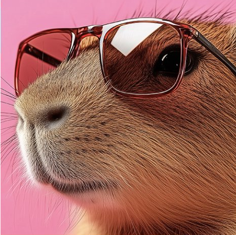

Biografía
Si quieres saber un poco más de mi, da clic acá... ¿quién soy yo?, una pregunta realmente profunda, y quizá nada fácil de responder... si busco una definición de quién soy yo, me debo apoyar en una frase de Antonio Gramsci (un personaje histórico, italiano él, y muy inteligente); la frase en cuestión es: "... Yo no quiero hacer el papel ni de mártir ni de héroe. Creo ser simplemente un hombre medio, que tiene sus convicciones profundas y que no las cambia por nada en el mundo". Me define bastante bien.

Pasatiempos
Un poco de las diversas actividades que me encantan... Aunque la mayoría de las actividades que realizo nacen de la cotideanidad, existen unas pocas que buscan solucionar, arreglar, reparar; en esencia, es eso lo que más me gusta, poder darle una segunda oportunidad a objetos que se rompieron o que aparentemente ya no sirven... Pero, hay más, no es lo único que realizo, también me gusta leer y definitivamente la música...
Contacto
Si deseas enviar algún comentario o sugerencia, por favor, no dudes y hazlo mediante el formulario de contacto. Estaré gustoso de poder responder a tus inquietudes. Con total confianza, comunícate conmigo.